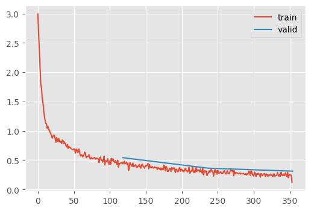
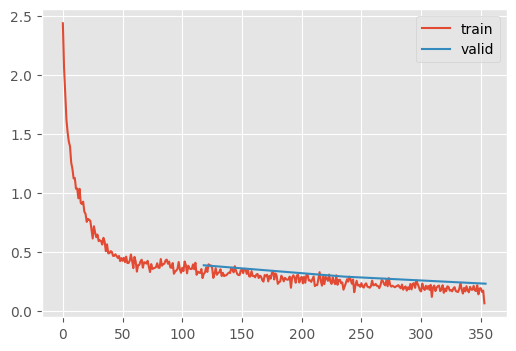
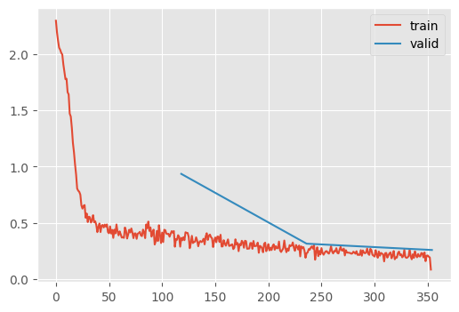
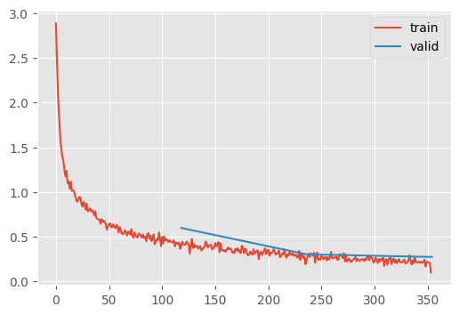

set_seed(42)
plt.style.use("ggplot")ResNets
Can we beat 90% accuracy on FashionMNIST?
Adapted from:
Let’s start by cleaning up some of the module implementations.
CNN
CNN (nfs=(8, 16, 32, 64), n_outputs=10, block=None)
6 layer convolutional neural network with GeneralReLU
init_leaky_weights
init_leaky_weights (module)
Conv
Conv (c_in, c_out, stride=2, ks=3, act=True, norm=True)
Convolutional block with norms and activations
GeneralReLU
GeneralReLU (a=0.1, b=0.4)
*Base class for all neural network modules.
Your models should also subclass this class.
Modules can also contain other Modules, allowing to nest them in a tree structure. You can assign the submodules as regular attributes::
import torch.nn as nn
import torch.nn.functional as F
class Model(nn.Module):
def __init__(self):
super().__init__()
self.conv1 = nn.Conv2d(1, 20, 5)
self.conv2 = nn.Conv2d(20, 20, 5)
def forward(self, x):
x = F.relu(self.conv1(x))
return F.relu(self.conv2(x))Submodules assigned in this way will be registered, and will have their parameters converted too when you call :meth:to, etc.
.. note:: As per the example above, an __init__() call to the parent class must be made before assignment on the child.
:ivar training: Boolean represents whether this module is in training or evaluation mode. :vartype training: bool*
_, stats = train_1cycle(CNN.kaiming(nfs=(8, 16, 32, 64)))
0.00% [0/3 00:00<?]
79.66% [94/118 00:06<00:01 0.478]
KeyboardInterrupt
stats.mean_std_plot()Going deeper
At this point, we can try to go deeper by adding a stride 1 convolution layer
class DeeperCNN(CNN):
"""7 layer convolutional neural network with GeneralReLU"""
def get_layers(self, nfs, n_outputs=10, C=None):
if C is None:
C = Conv
assert len(nfs) == 5
# Notice we changed the stride to 1 to fit another layer --+
layers = [C(1, 8, ks=5, stride=1)] # 👈 ------------------+
for c_in, c_out in zip(nfs, nfs[1:]):
layers.append(C(c_in, c_out))
layers.append(C(nfs[-1], n_outputs, act=False))
return layerstrain_1cycle(DeeperCNN.kaiming(nfs=(8, 16, 32, 64, 128)));| MulticlassAccuracy | loss | epoch | train |
|---|---|---|---|
| 0.783 | 0.764 | 0 | train |
| 0.818 | 0.544 | 0 | eval |
| 0.885 | 0.364 | 1 | train |
| 0.873 | 0.366 | 1 | eval |
| 0.913 | 0.271 | 2 | train |
| 0.895 | 0.314 | 2 | eval |

This gives us 90% in 3 epochs, which is the quickest we’ve been able to achieve that accuracy.
We want to make our networks wider and deeper, but this has a limit even with an apropriate initialization. In “Deep Residual Learning for Image Recognition,” Kaiming observed that a 56 layer network had worse performance than a 20 layer network. Why?
Notice, if the 36 extra layers were \(I\), it should have the same performance of the smaller network. In other words, it’s a superset of the small network. We should be able to table advantage of the initial training dynamics of the shallower network with deeper networks with Skip Connections.

class ResidualBlock(nn.Module):
def __init__(self, inner):
self.inner = inner
def forward(self, x):
x_orig = x
x = self.inner(x)
assert x.shape == x_orig.shape
return x + x_origNote that the shape must not change after the inner transformation. To do so with a Convolutional Neural Network, we need a very simple “Identity” convolution that does the same transformation.
F.avg_pool2d?Docstring: avg_pool2d(input, kernel_size, stride=None, padding=0, ceil_mode=False, count_include_pad=True, divisor_override=None) -> Tensor Applies 2D average-pooling operation in :math:`kH \times kW` regions by step size :math:`sH \times sW` steps. The number of output features is equal to the number of input planes. See :class:`~torch.nn.AvgPool2d` for details and output shape. Args: input: input tensor :math:`(\text{minibatch} , \text{in\_channels} , iH , iW)` kernel_size: size of the pooling region. Can be a single number or a tuple `(kH, kW)` stride: stride of the pooling operation. Can be a single number or a tuple `(sH, sW)`. Default: :attr:`kernel_size` padding: implicit zero paddings on both sides of the input. Can be a single number or a tuple `(padH, padW)`. Default: 0 ceil_mode: when True, will use `ceil` instead of `floor` in the formula to compute the output shape. Default: ``False`` count_include_pad: when True, will include the zero-padding in the averaging calculation. Default: ``True`` divisor_override: if specified, it will be used as divisor, otherwise size of the pooling region will be used. Default: None Type: builtin_function_or_method
ResidualConvBlock
ResidualConvBlock (c_in, c_out, stride=2, ks=3, act=True, norm=True)
Convolutional block with residual links
m = DeeperCNN.kaiming(nfs=(8, 16, 32, 64, 128), block=ResidualConvBlock)
_ = train_1cycle(m)| MulticlassAccuracy | loss | epoch | train |
|---|---|---|---|
| 0.807 | 0.583 | 0 | train |
| 0.869 | 0.384 | 0 | eval |
| 0.894 | 0.289 | 1 | train |
| 0.893 | 0.288 | 1 | eval |
| 0.926 | 0.201 | 2 | train |
| 0.915 | 0.228 | 2 | eval |

Recall, the previous best was %90.9 after 5 epochs 🥳
Let’s take a closer look at how the parameters are allocated
SummaryCB
SummaryCB (mods=None, mod_filter=<function noop>)
Summarize the model
summarize
summarize (m, mods, dls=<slowai.learner.DataLoaders object at 0x7f52347e6350>)
for block in [Conv, ResidualConvBlock]:
print(block.__name__)
m = DeeperCNN.kaiming(nfs=(8, 16, 32, 64, 128), block=block)
summarize(m, m.layers)Conv| Type | Input | Output | N. params | MFlops |
|---|---|---|---|---|
| Conv | (512, 1, 28, 28) | (8, 28, 28) | 216 | 0.2 |
| Conv | (512, 8, 28, 28) | (16, 14, 14) | 1,184 | 0.2 |
| Conv | (512, 16, 14, 14) | (32, 7, 7) | 4,672 | 0.2 |
| Conv | (512, 32, 7, 7) | (64, 4, 4) | 18,560 | 0.3 |
| Conv | (512, 64, 4, 4) | (128, 2, 2) | 73,984 | 0.3 |
| Conv | (512, 128, 2, 2) | (10, 1, 1) | 11,540 | 0.0 |
| Total | 110,156 |
ResidualConvBlock| Type | Input | Output | N. params | MFlops |
|---|---|---|---|---|
| ResidualConvBlock | (512, 1, 28, 28) | (8, 28, 28) | 1,848 | 1.4 |
| ResidualConvBlock | (512, 8, 28, 28) | (16, 14, 14) | 3,664 | 0.7 |
| ResidualConvBlock | (512, 16, 14, 14) | (32, 7, 7) | 14,496 | 0.7 |
| ResidualConvBlock | (512, 32, 7, 7) | (64, 4, 4) | 57,664 | 0.9 |
| ResidualConvBlock | (512, 64, 4, 4) | (128, 2, 2) | 230,016 | 0.9 |
| ResidualConvBlock | (512, 128, 2, 2) | (10, 1, 1) | 13,750 | 0.0 |
| Total | 321,438 |
Indeed, we have almost 3x as many paramters and the training dynamics are quite stable!
How does this compare to a standard implementation?
def train_timm(id):
m = timm.create_model(id, in_chans=1, num_classes=10)
m.layers = [] # Because we're not recording anything
np = sum(p.numel() for p in m.parameters())
print(f"N. parameters: {np:,}")
train_1cycle(m)train_timm("resnet18")N. parameters: 11,175,370| MulticlassAccuracy | loss | epoch | train |
|---|---|---|---|
| 0.776 | 0.663 | 0 | train |
| 0.729 | 0.935 | 0 | eval |
| 0.884 | 0.312 | 1 | train |
| 0.890 | 0.316 | 1 | eval |
| 0.914 | 0.230 | 2 | train |
| 0.906 | 0.260 | 2 | eval |

Slightly better! Of course, this model has 30x more parameters, so it’s not surprising.
How does this compare to a network without these links?
class DoubleConvBlock(nn.Module):
"""Convolutional block with residual links"""
def __init__(self, c_in, c_out, stride=2, ks=3, act=True, norm=True):
super().__init__()
self.conv_a = Conv(c_in, c_out, stride=1, ks=ks, act=act, norm=norm)
self.conv_b = Conv(c_out, c_out, stride=stride, ks=ks, act=act, norm=norm)
def forward(self, x):
x = self.conv_a(x)
x = self.conv_b(x)
return xm = DeeperCNN.kaiming(nfs=(8, 16, 32, 64, 128), block=DoubleConvBlock)shape(m)
0.00% [0/3 00:00<?]
0.00% [0/118 00:00<?]
| Type | Input | Output | N. params |
|---|---|---|---|
| DoubleConvBlock | (512, 1, 28, 28) | (8, 28, 28) | 1,832 |
| DoubleConvBlock | (512, 8, 28, 28) | (16, 14, 14) | 3,520 |
| DoubleConvBlock | (512, 16, 14, 14) | (32, 7, 7) | 13,952 |
| DoubleConvBlock | (512, 32, 7, 7) | (64, 4, 4) | 55,552 |
| DoubleConvBlock | (512, 64, 4, 4) | (128, 2, 2) | 221,696 |
| DoubleConvBlock | (512, 128, 2, 2) | (10, 1, 1) | 12,460 |
| Total | 309,012 |
_ = train_1cycle(m)| MulticlassAccuracy | loss | epoch | train |
|---|---|---|---|
| 0.793 | 0.730 | 0 | train |
| 0.806 | 0.599 | 0 | eval |
| 0.889 | 0.348 | 1 | train |
| 0.898 | 0.304 | 1 | eval |
| 0.920 | 0.247 | 2 | train |
| 0.910 | 0.275 | 2 | eval |

Interestingly, only the slightest bit worse